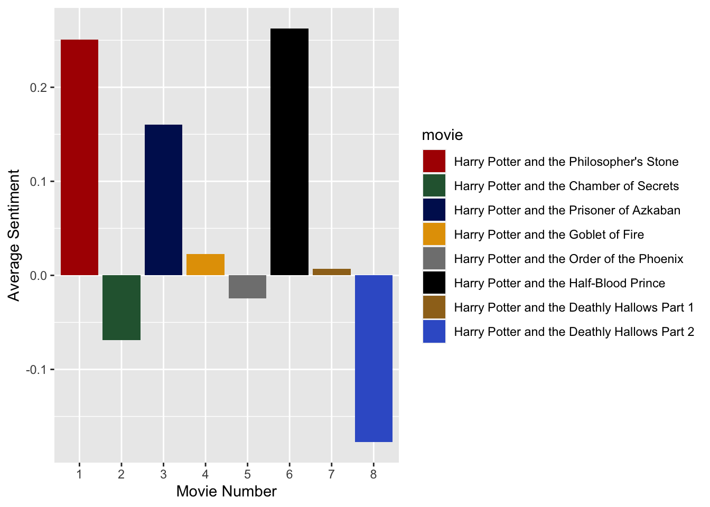
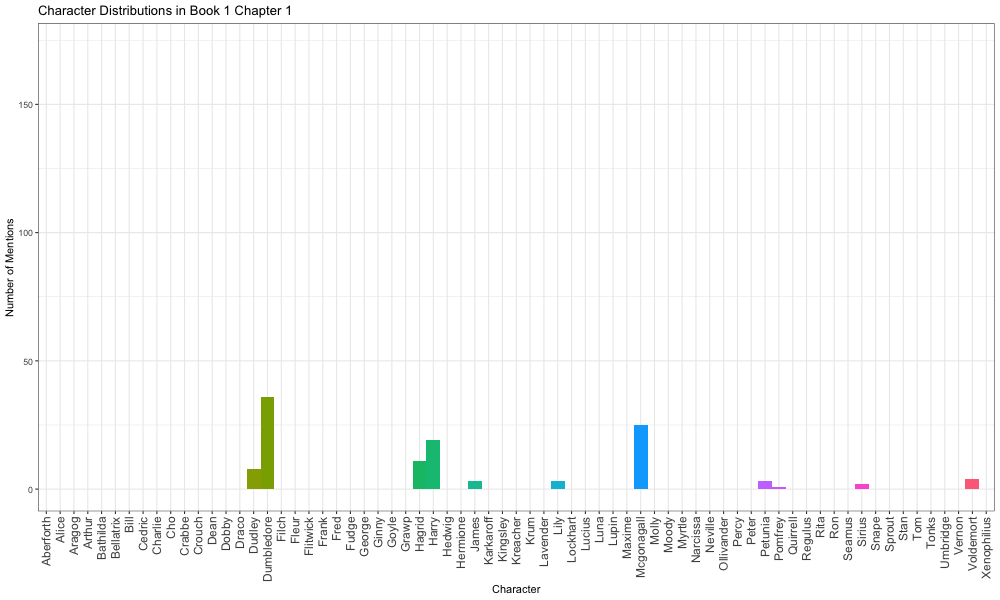

Potterwatch
Introduction
It is no secret that the Harry Potter books and movie franchise are vastly beloved: its world building and character development lauded as some of the best for children and young adults. The books are split into seven installments: “Harry Potter and the Philosopher’s Stone,” “Harry Potter and the Half Blood Prince,” “Harry Potter and the Prisoner of Azkaban,” “Harry Potter and the Goblet of Fire,” “Harry Potter and the Order of the Phoenix,” “Harry Potter and the Half-Blood Prince,” and “Harry Potter and the Deathly Hallows.” The movies are divided similarly, only having two parts to “Harry Potter and the Deathly Hallows” instead of one. Seeking to see trends in character mention frequency and sentiment in the books and movies respectively, we created two visualizations.
Sentiment Analysis
The Harry Potter series is often first thought of as a fantasy, but under that cover, it is a rich coming-of-age story. As the movies progress, and we follow the life of a once young Harry, we also go through with him on many of his firsts. His first birthday cake, first day at Hogwarts, first friends and loves, and the quintessential first battle with a dark wizard that every average teenager goes through. The point is that the Harry Potter series is one that is full of so many emotions, which is ultimately what inspired this project. We will take you through a sentiment analysis of the many movies and discuss how using data allows you to analyze them in a way you likely haven’t before.
Chapter by Chapter Analysis
Before we begin there are a there is something important we should explain: what exactly is a sentiment analysis? In simple terms it is the process of analyzing a text to determine the emotional tone of its message. In this case we relied on the AFINN lexicon that assigns a variety of words a score running between -5 and +5, with negative scores indicating negative sentiment and positive scores indicating positive sentiment. For each of the movies we found all words that had a matching rating in the lexicon. From there we calculated the average rating of each chapter which is displayed in the interactive graph below. You will see that you have the ability to select which movies you would like displayed as well as a hovering tool that allows you to look at various points on the graph and see specific details about the chapter.
Extreme Chapters
We want to bring your attention to the chapters that were noted as having the greatest and least average sentiment in the entire series. The chapter that was considered most positive is “Getting Too Close” in “Harry Potter and the Deathly Hallows Part 1”. Additionally, the chapter the was considered the most negative is “Writing on the Wall” in “Harry Potter and the Chamber of Secrets”. Now for those of you that are potterheads and are deeply familiar with the movies, this may already raise some red flags for you. Regardless, lets take a look at the chapters:
‘Getting Too Close’ - Most Positive Chapter
It doesn’t take an avid Harry Potter fan to sense that ‘Getting Too Close’ probably isn’t the most positive chapter in the entire series. For those that need context: up this point the three characters you see are in hiding, and on a quest to find and destroy the remaining parts of Voldemort’s (a dark wizard that is also Harry’s arch-nemesis) soul in order to save the world. Voldemort is obsessed with wizard blood purity and is the leader of a movement that aims to rid the wizarding world of Muggles (non-magical humans). Under his reign, snatchers arise and their job is to capture and turn in muggle-borns, mudbloods, and blood-traitors. Coincidentally, Harry, Ron, and Hermione are all three. In the chapter you just watched despite Hermoine having set up magical barriers she is still struck by fear of getting caught and killed as a snatcher can smell her perfume. In other words, this is definitely not a positive scene.
So if the chapter is so clearly negative, why does it show up as being the most positive scene? Well this is a very important limitation that needs to be addressed when analyzing the movies with a lexicon. In movie production there is a common principle of “show don’t tell.” The idea is to simply show the viewers something rather than relying on dialogue or narration to explain it. As a result the dialogue in many chapters we see are quite limited. In this case, only a few lines are considered to be in this dataset for this chapter including: “What’s that? That… smell?”, “Snatchers”, “Good to know your enchantments work”, and “He could smell it. My perfume.” With only 4 lines of dialogue the sentiment analysis becomes extremely limited and, as it turns out, the only word that was in the lexicon was “good” with a rating of 3. It then follows that the average sentiment of the chapter is 3.
Now that we have this limitation in mind lets take a look at the most negative chapter while paying attention to the dialogue and see why it might have that rating:
‘Writing on the Wall’ - Most Negative Chapter
After listening did you happen to notice any repeated words that might have negative sentiment? That’s right, the word kill is used frequently and by many characters in the chapter. As it turns out, the lexicon has the word kill rated as a -3. The scene is definitely eerie which matches with its negative rating, however, it may not be the scene that comes to mind when one tries thinking of the most negative. The series is full of deaths as well as many other sad and painful moments that others would typically associate as being more negative.
Movie by Movie Analysis
For this reason above, we thought it may also be beneficial to take a step back. The visualization below displays the average sentiment for each movie in the series. The data shown was calculated in the same way as the chapter by chapter analysis, just on a broader scale. We find that this visualization matches better with how we, and how we would think most others, picture the Harry Potter series. While this is still far from perfect there are some trends that make more sense. For one, the most negative movie is the final one in which the greatest battle of the series occurs and many beloved characters unfortunately lose their lives. Additionally, the most positive movie is “Harry Potter and the Half Blood Prince” which is the book in which Harry falls in love for the first time. This is quickly followed by the very first movie in which Harry was allowed to leave his abusive household and gets introduced to the world of magic where he finally feels belonging.

Additional Limitations
An important limitation that also needs to be considered when analyzing a fantasy series is the scope of the lexicon. The author behind the Harry Potter books, that the movies were later based on, created a heavily fictionalized world. It’s a world in which magic exists, currency is gold, and magical creatures from giants to dragons all live. With this new world, however, also comes new language. Throughout this post I’ve introduced some of this language including “muggles”, “mud-bloods”, and “snatchers” yet this is only the tip of the iceberg. There are so many other magical terms including at least 110 different spells used in the series. This language being fictional was obviously not included in the lexicon, and thus wasn’t included in the analysis, but many of them have clear negative or positive connotations. A great example of this are the Unforgivable Curses which is best explained by this scene:
‘The Three Unforgivable Curses’
Character Mention Frequency
The other type of analysis we did over the Harry Potter series regards character mentions. We wanted to see not only the most mentioned characters in the book series, but also how those mentions change through the different chapters over time. To do this, we needed a way to pinpoint names of individual characters in the text: a particular challenge when so many characters are sometimes referred to by their last name. For example, many of the members of the Weasley family are simply called “Weasley” in the books, but it is impossible to pick up these mentions without some advanced tool to detect each mention’s context. So, in this scenario, we had to use the characters’ first names. Additionally, there are some characters that go by multiple name, like how “Voldemort” also is referred to as “Tom Riddle” or “He Who Must Not Be Named” in the series. In this case, we picked the most common name for a specific character to search in the text.
Over the Entire Series
First, we were curious about the generally most named characters. In a way, this is an objective way to view how “main” a character is. Of course, the importance of a character to a story is often subjective. Rather, the frequency a name appears in a text can give the impression of how important the author intended a character to be (which hopefully aligns with the impression if it’s a good author). Below are the eight most common names appearing in the Harry Potter book series.
| Character | Number of Mentions |
|---|---|
| Harry | 16557 |
| Ron | 5750 |
| Hermione | 4912 |
| Dumbledore | 2873 |
| Hagrid | 1732 |
| Snape | 1532 |
| Sirius | 1002 |
| Voldemort | 980 |
The top three any fan of the series could have predicted: the trio of Harry, Ron, and Hermione is who the series follows most of all, so it makes sense that their names are the most used. A surprising feature of this table was the prevalence of the name “Sirius” in the series, appearing as the seventh most popular name. Considering the fact that he is only alive in three of the books (3, 4, and 5), and is rarely mentioned in the books after he dies, this just shows how much focus was on his character when he was in the story.
Over Each Chapter
In addition to the name frequencies of the entire series, we also wanted to look at how these character mentions changed over each chapter. To visualize this, we created an animation that transitioned between a bar chart showing name counts for each chapter. You can see what book and chapter the current bar chart is from in the top left corner.

Again, Harry is front (and center) with his green bar consistently higher than the rest, thanks to Rowling’s general adherence to a third-person limited point of view. Compared with the table, this animation gives a much fuller view of the series, as many other characters are now seen to have a big impact locally (in a few chapters), even if they aren’t mentioned a ton in the scope of the entire series. For example, “Umbridge” is only spoken past the fifth book, but her name pops up a lot when she becomes part of the story. We can also infer things about the books from how often characters are mentioned over time. From the animation, we can see that Voldemort’s name is spoken more and more throughout the book series, both because he becomes more of a threat over time and because other characters become more comfortable saying his true name, rather than “He Who Must Not Be Named” or “You Know Who.”
References
Datasets
Chauvet, L. (2021). hp-dataset. GitHub. https://github.com/Kornflex28/hp-dataset
Finn Årup Nielsen A new ANEW: Evaluation of a word list for sentiment analysis in microblogs. Proceedings of the ESWC2011 Workshop on ‘Making Sense of Microposts’: Big things come in small packages 718 in CEUR Workshop Proceedings 93-98. 2011 May. http://arxiv.org/abs/1103.2903.
Sanchez, Gaston (2023). harry_potter_books.csv. Github. https://github.com/gastonstat/harry-potter-data/tree/main/csv-data-file
R Packages
C. Sievert. Interactive Web-Based Data Visualization with R, plotly, and shiny. Chapman and Hall/CRC Florida, 2020.
Silge, J., & Robinson, D. (2016). Tidytext: Text mining and analysis using tidy data principles in R. Journal of Open Source Software, 1(3), 37, available at https://doi.org/10.21105/joss.00037
Wickham H, François R, Henry L, Müller K, Vaughan D (2023). “dplyr: A Grammar of Data Manipulation,” R package version 1.1.3, available at https://CRAN.R-project.org/package=dplyr.
Wickham H (2016). ggplot2: Elegant Graphics for Data Analysis. Springer-Verlag New York. ISBN 978-3-319-24277-4, available at https://ggplot2.tidyverse.org.
Wickham H, Averick M, Bryan J, Chang W, McGowan L, François R, et al. (2019). Welcome to the tidyverse. Journal of Open Source Software. 4 (43), 1686, available at https://doi.org/10.21105/joss.01686.
Xie Y, Cheng J, Tan X (2022). “DT: A Wrapper of the JavaScript Library ‘DataTables’,” R package version 0.24, available at https://CRAN.R-project.org/package=DT.
Xie Y (2023). “knitr: A General-Purpose Package for Dynamic Report Generation in R,” R package version 1.45, available at https://yihui.org/knitr/.
Videos
DutchHPfan1992. (2013, January 21). Harry Potter and the Deathly Hallows part 1 - Hermione and the Snatchers in the forrest (HD) [Video file]. YouTube. https://www.youtube.com/watch?v=LDcz02lEfi4
Matheusor1. (2008, June 29). Harry Potter- “The chamber of secrets has been opened” scene [Video file]. YouTube. https://www.youtube.com/watch?v=bjNHWwelxN4
Potter, Harry. (2017, August 17). The Three Unforgivable Curses | Harry Potter and the Goblet of Fire [Video file]. YouTube. https://www.youtube.com/watch?v=dbV3qODiBGc